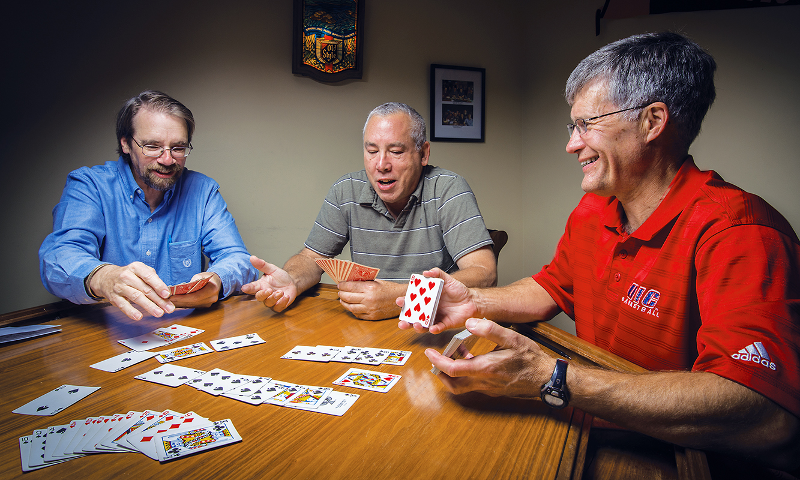
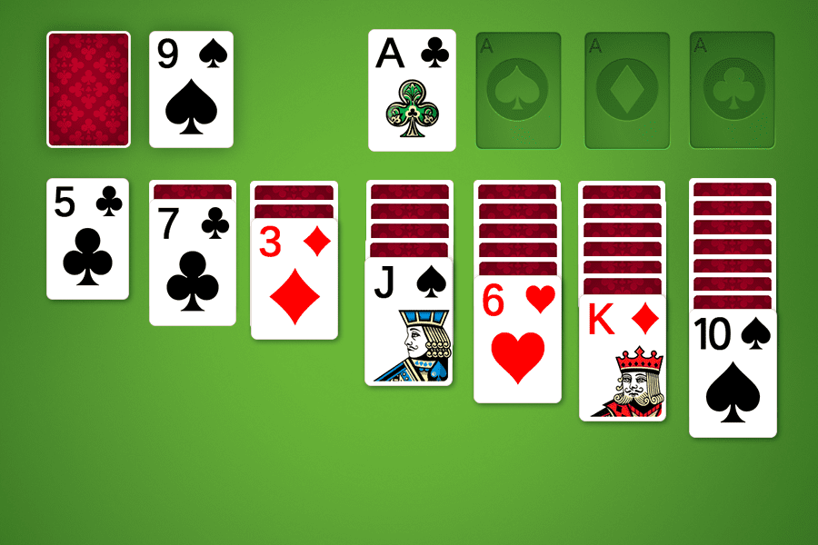
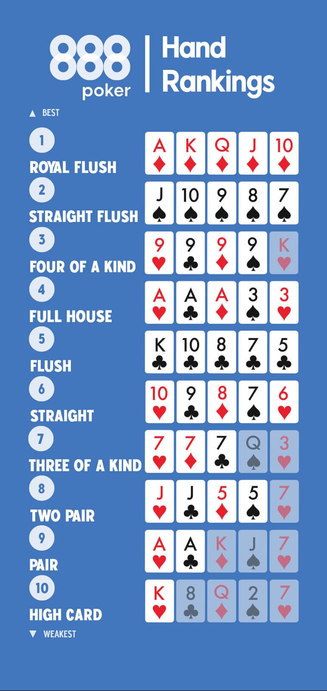
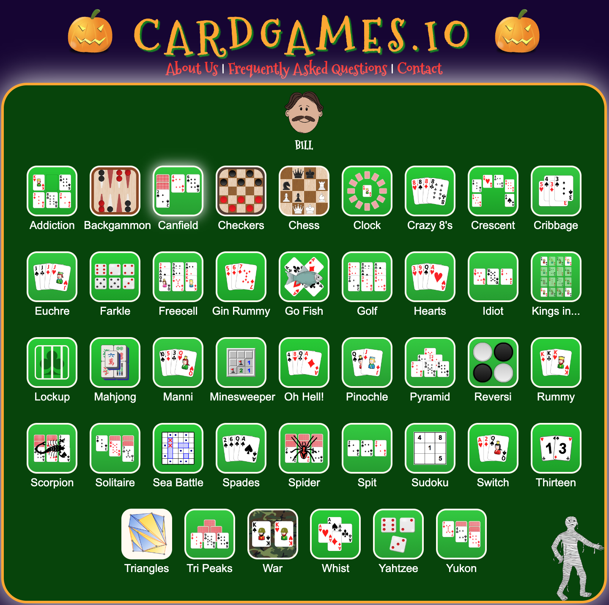

Home
Why Card Games?
Card Games have existed for over a millennium and are still popular today even if through different mediums. It is estimated that there are anywhere from 1,000 to 10,000 different card games based on what you define as a card game. This is crazy to think about since truthfully there are only 52 (no joker cards) total cards in a deck. Even knowing this there is actually 52! (8e67) ways of shuffling a single deck! Cards although may be simple paper with designs on them, have the ability to entertain almost anyone as there is surely a game made for everyone.
What are some card games?
As mentioned earlier there are thousands of card games but I have provided some of the more popular ones below that will be our primary focus throughout this page:
- Blackjack
- Poker
- Cheat (aka BS)
- SlapJack
- Spades
What are the cards?
So now that we know a little about card games, you may be wondering what are the actual cards? Feel free to follow along with the image below to better see how the cards actually look. Well there are 4 different suits each which have 13 cards. The easier to distinguish are the number cards ranging from 2-10. Beyond the number cards we have the face cards which are the Jack, Queen, King. The value of these cards change depending on the game that is being played. The last card is the Ace card which is marked by the letter A on the card. Now that we know the cards we can continue to the suites. Each of these cards exist in each of the suites. These suites are also further broken down into colors which is red and black. The diamond and heart suites are red while the clubs and spades are black. This detail can have significance in some games but not in all.
About Me
How Long Have I Played?
I have been playing varying card games since I was around 5 years old. Started with the good old Bak
What are some card games?
As mentioned earlier there are thousands of card games but I have provided some of the more popular ones below that will be our primary focus throughout this page:
- Blackjack
- Poker
- Cheat (aka BS)
- SlapJack
- Spades
What are the cards?
So now that we know a little about card games, you may be wondering what are the actual cards? Feel free to follow along with the image below to better see how the cards actually look. Well there are 4 different suits each which have 13 cards. The easier to distinguish are the number cards ranging from 2-10. Beyond the number cards we have the face cards which are the Jack, Queen, King. The value of these cards change depending on the game that is being played. The last card is the Ace card which is marked by the letter A on the card. Now that we know the cards we can continue to the suites. Each of these cards exist in each of the suites. These suites are also further broken down into colors which is red and black. The diamond and heart suites are red while the clubs and spades are black. This detail can have significance in some games but not in all.
When Can You Play?
Regular Card Games
Well here is the beauty of card games...THERE IS NO RIGHT TIME! Card games can be played anytime of the year except for the obvious snowy day outside. But in theory it is still entierly possible to do this. I would just recommend doing it in a warmer dry environment then on a snowy or rainy day outside.
Online Card Games
Just like with regular card games you can play this whenever! The only limitation is charge of your device and your willingness to lose hours of time inside these games.
Where Can You Play Cards?
Why Card Games?
Card Games have existed for over a millennium and are still popular today even if through different mediums. It is estimated that there are anywhere from 1,000 to 10,000 different card games based on what you define as a card game. This is crazy to think about since truthfully there are only 52 (no joker cards) total cards in a deck. Even knowing this there is actually 52! (8e67) ways of shuffling a single deck! Cards although may be simple paper with designs on them, have the ability to entertain almost anyone as there is surely a game made for everyone.
What are some card games?
As mentioned earlier there are thousands of card games but I have provided some of the more popular ones below that will be our primary focus throughout this page:
- Blackjack
- Poker
- Cheat (aka BS)
- SlapJack
- Spades
What are the cards?
So now that we know a little about card games, you may be wondering what are the actual cards? Feel free to follow along with the image below to better see how the cards actually look. Well there are 4 different suits each which have 13 cards. The easier to distinguish are the number cards ranging from 2-10. Beyond the number cards we have the face cards which are the Jack, Queen, King. The value of these cards change depending on the game that is being played. The last card is the Ace card which is marked by the letter A on the card. Now that we know the cards we can continue to the suites. Each of these cards exist in each of the suites. These suites are also further broken down into colors which is red and black. The diamond and heart suites are red while the clubs and spades are black. This detail can have significance in some games but not in all.
Why Do I Like Cards?
Why Card Games?
Card Games have existed for over a millennium and are still popular today even if through different mediums. It is estimated that there are anywhere from 1,000 to 10,000 different card games based on what you define as a card game. This is crazy to think about since truthfully there are only 52 (no joker cards) total cards in a deck. Even knowing this there is actually 52! (8e67) ways of shuffling a single deck! Cards although may be simple paper with designs on them, have the ability to entertain almost anyone as there is surely a game made for everyone.
What are some card games?
As mentioned earlier there are thousands of card games but I have provided some of the more popular ones below that will be our primary focus throughout this page:
- Blackjack
- Poker
- Cheat (aka BS)
- SlapJack
- Spades
What are the cards?
So now that we know a little about card games, you may be wondering what are the actual cards? Feel free to follow along with the image below to better see how the cards actually look. Well there are 4 different suits each which have 13 cards. The easier to distinguish are the number cards ranging from 2-10. Beyond the number cards we have the face cards which are the Jack, Queen, King. The value of these cards change depending on the game that is being played. The last card is the Ace card which is marked by the letter A on the card. Now that we know the cards we can continue to the suites. Each of these cards exist in each of the suites. These suites are also further broken down into colors which is red and black. The diamond and heart suites are red while the clubs and spades are black. This detail can have significance in some games but not in all.
Blackjack
What is the objective?
At its core blackjack is quite simple. Your main goal is to beat the dealer. You want to get as close to 21 without going over. This leads to the next part.
How do you beat the dealer?
- Getting a hand value larger then that of the dealer
- The dealer bust(player gets a hand value of over 21)
- Pulling black jack which is a starting value of 21
How do you lose to the dealer?
- You bust while the dealer does not.
- The dealer obtains a higher value then you
How do you calculate your hand value?
In blackjack, to calculate you hand value you take the sum of both your cards. Number cards are what their number says while all face cards count for 10. The final card is a special one which is the ace. The ace card can count for either 11 or 1 depending if you are over 21 or not
Detailed Video
Poker
How do you win?
To win at poker, you either have to bluff your opponents or hold the best hand at the end (aka the “showdown”). In poker, you are looking to make the best possible five card hand. Your holdings can range from a high card up to a Royal Flush.
What are the hand rankings?
 The rankings are as follow:
- Royal Flush: This is the rarest hand and because of that it is the highest ranking hand. This is when you have 10, J, Q, K, A of the same suite.
- Straight Flush: This is a hand that consists of five consecutive cards of the same suit.
- 4-of-a-Kind: This is a hand where you have all 4 of one card. For example you can have K, 9, 9, 9, 9.
- Full House: Sometimes this may be refered to as a boat, but it consits of have a 3-of-a-Kind and a Pair in a single hand.
- Flush: This is a hand in which you have matching cards of the same suite. Their values do no matter unless someone else also has a flush.
- Straight: Consists of having a hand in which cards are consecutive regardless of the suite.
- 3-of-a-Kind Consits of having three of the same card values.
- Two Pair: Consits of having two pairs. The final card is then your considered your kicker.
- One Pair: Consits of having two of the same card value.
- High Card: If all else fails or multiple people have same ranked hands then this is the final check. The cards are assigned values and thus whichever hand has high card is the one that takes it.
How to play?
To begin there are three community cards dealt(the flop) which is ended with a round of betting starting from the person left of the dealer. After completing the round, another community card is dealt one again for players to attempt to make the best five-card hand. This round is then finished with another wave of betting starting again from the left of the dealer and going through each person still active. In the final round the last community card is dealt in which the final bets are set for the showdown. Players now reveal hands (starting with last person to bet) and the one with highest rank hand wins.
Detailed Video
Cheat
What is the objective?
The objective of Cheat is quite simple. The goal is to be the first player to get rid of all their cards.
How do you play?
How to setup?
In order to set up you must take the entire deck and split among all the players(3-10 players). There are no stockpiles in this game as all cards will be within the hands of all players.
How to play?
Play begins with the player to the left of the dealer. He places the Aces in his hand facedown on the discard pile and announces his play to the table: “One Ace.” If the player does not have any Aces, or if he wishes to get rid of more than one card, he may bluff and play non-Ace cards while announcing: “Two Aces.” The next player plays 2s, the next player plays 3s, and so on. If a player doesn not believe an announcement, he can call out, “Cheat!” The person who played the cards must turn them over and show the challenger whether he is bluffing or not. A player who is caught bluffing must pick up the entire discard pile and add it to his hand. If a challenged player is not bluffing, then the challenger must pick up the discard pile. When the rank to play reaches Kings, it then goes back to Aces and the numbers start again.
Detailed Video
Slapjack
What is the objective?
The goal is to win all the cards, by being first to slap each Jack as it is played to the center.
How do you play?
How to deal?
Cards are dealt one at a time, face down, to each player until all the cards have been dealt. The hands do not have to come out even. Without looking at any of the cards, each player squares up their hand into a neat pile in front of them.
How to play?
The first player will be the one left of the dealer. One player at a time, each player will lift one card at a time from their pile and places it face up in the center of the table. If the card played is a Jack, all players will try to "slap" it. Whoever is the first to slap it will be able to take all the cards at the center and must put it at the bottom of their pile and shuffle it. If more than one hand slaps the pile then whosever hand is on top of the pile wins the Jack and pile. If a player slaps and it is not a Jack then the player who slapped gives their next card to the player who played the last card. If a player runs out of cards then they must wait until the next Jack to try and smack and claim the pile. However, if they fail to claim that Jack and pile, then the player is out of the game.
Detailed Video
Spades
What is the objective?
To win at least the number of tricks bid.
Game Breakdown
How to deal?
The first dealer is chosen by a draw for high card, and thereafter the turn to deal proceeds clockwise. The entire deck is dealt one at a time, face down, beginning on the dealer's left. The players then pick up their cards and arrange them by suits.
What is Bidding?
Each player decides how many tricks they will be able to take. The player to the dealer's left starts the bidding and, in turn, each player states how many tricks they expect to win. There is only one round of bidding, and the minimum bid is One. Every player must make a bid; no player may pass. No suit is named in the bid, for as the name of the game implies, spades are always trump.
How do you actually play?
The game is scored by hands, and the winner must make a certain number of points, which is decided before the game begins. Five hundred points is common, but 200 points is suitable for a short game. The player on the dealer's left makes the opening lead, and players must follow suit, if possible. If a player cannot follow suit, they may play a trump or discard. The trick is won by the player who plays the highest trump or if no trump was played, the player who played the highest card in the suit led. The player who wins the trick leads next. Play continues until none of the players have any cards left. Each hand is worth 13 tricks. Spades cannot be led unless played previously or player to lead has nothing but Spades in his hand.
How do you keep score?
For making the contract (the number of tricks bid), the player scores 10 points for each trick bid, plus 1 point for each overtrick. For example, if the player's bid is Seven and they make seven tricks, the score would be 70. If the bid was Five and the player won eight tricks, the score would be 53 points: 50 points for the bid, and 3 points for the three overtricks. In some games, overtricks are called "bags" and a deduction of 100 points is made every time a player accumulates 10 bags. Thus, the object is always to fulfill the bid exactly. If the player "breaks contract," that is, if they take fewer than the number of tricks bid, the score is 0. For example, if a player bids Four and wins only three tricks, no points are awarded. One of the players is the scorer and writes the bids down, so that during the play and for the scoring afterward, this information will be available to all the players. When a hand is over, the scores should be recorded next to the bids, and a running score should be kept so that players can readily see each other's total points. If there is a tie, then all players participate in one more round of play.
Detailed Video
Card Games
Click on the images to be able to play these games!
cardgames.io
arkadium.com

usatoday.com